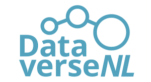

Good (enough) practices
Inhoud
Good (enough) practices¶
De opslag van data is in 2022 ongelofelijk goedkoop, maar de tijd van onderzoekers is schaars en duur. Op het moment van schrijven is de prijs van een harde schijf ongeveer 2 cent per GB. De prijs van het kwijtraken of beschadigen van data is echter velen malen groter en kan een project zo maar een jaar vertragen. Goed (genoeg) data management kan bijdragen aan de efficiëntie van een project en de risico’s op het verliezen of beschadigen van data inperken. Daarnaast is het belangrijk om ervoor te zorgen dat de data geschikt zijn voor analyse en archivering. Door hier van tevoren al rekening mee te houden zorgen we dat we geen extra werk moeten leveren en zoveel mogelijk kunnen automatiseren. Zonder een heel verhaal over FAIR op te hangen zijn er een aantal belangrijke tips and tricks die men kan gebruiken voor het goed genoeg beheren van data 1:

Sla je ruwe data op¶
Zorg dat de ruwe data altijd los is opgeslagen. Het kan zijn dat een meetinstrument een rapport uitdraait. Zorg in zo’n geval dat je naast het rapport ook de ruwe data opslaat. Het kan ook zijn dat je direct aan de slag wilt met de data, vooral bij programma’s die data opslag en verwerking/visualisatie combineren (bijv. Excel) is dit erg verleidelijk. Maar zonder toegang tot de ruwe data is de enige manier waarop je weer toegang tot de originele informatie kan krijgen door een meting te herhalen. De ruwe data hoort daarom thuis in een losse map die ofwel read-only is of een extra back-up heeft, en het liefst beide. Je kan met de read-only files werken of desnoods een ‘werkkopie’ maken waarmee je aan de slag kan.
Zorg voor een back-up¶
Een back-up is essentieel! Harddrives gaan kapot, laptops worden gestolen, en files kunnen worden overschreven. De enige manier om er zeker van te zijn dat je data veilig is, is met een back-up. Werk dus niet alleen met de data op je Fontys computer, maar zorg er ook voor dat het project in Fontys Research Drive staat. Research Drive maakt automatisch back-ups verdeeld over meerdere data centers. Je kan ook ‘snapshots’ van een project maken door tussentijdse versies te zippen en ergens naast het project in Research Drive op te slaan. Dat is vooral erg handig als je (nog) niet vaardig bent met speciale version control software (bijv. Git).
Verwerk de data¶
Zorg dat de data zo snel mogelijk in een bewerkbaar en houdbaar format komt te staan. Een klassiek voorbeeld is de oude Windows-98 computer achterin het lab waar de software opstaat van die ene dure sensor. Die computer die tevens de enige computer is met de software om de ruwe data om te kunnen zetten naar een verwerkbaar format. Om ervoor te zorgen dat we niet afhankelijk zijn van deze computer moeten we de data zo snel mogelijk omzetten naar een houdbaar format. Hiermee zorgen je ervoor dat jij en anderen, nu en in de toekomst, met de data aan de slag kunnen zonder vendor lock-in.
Kies dus een format dat lang mee kan gaan en waar geen specifieke software voor nodig is om het te openen. Een goed format is future-proof en simpel. In praktijk zijn dit veelal text files zoals .csv voor ‘spreadsheet’ data of .txt voor tekst. Voor een overzicht van geschikte formats kan men kijken bij DANS en 4TU. Hieronder een aantal voorbeelden:
Duurzaam
Data: CSV, JSON, ODS
Documenten: PDF, ODT, TXT
Afbeeldingen: JPEG, PNG, SVG
Video/Audio: MXF, MKV, FLAC
Markup: XML, HTML
Niet-duurzaam
Data: SAV, MDB, XLSX
Documenten: DOC, DOCX, RTF
Afbeeldingen: AI, EPS, WMF
Video/Audio: MPEG-4, AVI, MP3
Markup: SGML
Er bestaat bij het converteren van bestanden altijd een risico dat informatie verloren gaat, bewaar daarom ook de originele file (in ieder geval totdat je het project hebt afgerond). Soms is het (nog) niet mogelijk om data in een open format op te slaan. Als er een ander format beschikbaar is dat een ‘industrie standaard’ is dan kan dat format worden gebruikt, maar op de lange termijn zou alles in een open format opgeslagen moeten worden. Leg van tevoren vast in het DMP welke bestanden je gaat gebruiken en welke bewerkingen daarvoor nodig zijn. Op de RDM portal staan wat handige tips voor het omzetten van data.
Beschrijf de data¶
De data moet beschreven worden zodat jij en anderen weten wat voor een data het precies betreft. Er zijn verschillende niveaus van metadata. Allereerst moet de dataset zelf beschreven worden, dat is bijvoorbeeld nodig om de data terug te kunnen vinden in DataverseNL, hiervoor vul je een metadataformulier in. Dan moet de inhoud van de dataset nog beschreven worden, hiervoor is een goede README de meest waardevolle toevoeging. Op de volgende pagina gaan we hier verder op in, maar in het kort: een README is een bestand (meestal in plain text) dat informatie geeft die gebruikers eerst moeten lezen voordat men aan de slag gaat. Voor specifieke files kan een data dictionary nog een goede toevoeging zijn. Hierin staan de namen van de variabelen, een omschrijving, toegestane waardes, etc.
Archiveer de data¶
Onderzoeksdata moet minimaal 10 jaar 2 bewaard blijven (15/20 jaar voor medische data 3). Het archiveren van data is dus een belangrijke stap in het onderzoeksproces. Bij voorkeur wordt de data openbaar gemaakt, maar als dat niet kan dan kan het ook gesloten gearchiveerd worden. Fontys beschikt over DataverseNL. Hier kunnen de data van helemaal open tot helemaal gesloten gearchiveerd worden (Module 4). Door al het voorwerk dat is gedaan in de voorgaande secties is het archiveren van data zo gebeurd. De organisatie is al op orde, evenals de documentatie, en de data staat al in een houdbaar format. Aan de data wordt een DOI gekoppeld waarmee jij en anderen kunnen refereren aan de data, hierdoor krijg je erkenning voor de moeite die je hebt gestoken in de data.
{kind=link}
Gebruik een systeem¶
Tot nu toe is er nog niets gezegd over hóe de data moet worden opgeslagen. Welke mappenstructuur is handig voor onderzoek en hoe moet ik de files noemen? Daar gaan we in het volgende stuk op in!
- 1
Wilson G, Bryan J, Cranston K, Kitzes J, Nederbragt L, Teal TK. Good enough practices in scientific computing. PLoS computational biology. 2017 Jun 22;13(6):e1005510. https://doi.org/10.1371/journal.pcbi.1005510
- 2
Vereniging van Universiteiten. De Nederlandse Gedragscode Wetenschapsbeoefening. 2014. http://www.vsnu.nl/files/documenten/Domeinen/Onderzoek/Code_wetenschapsbeoefening_2004_(2014).pdf
- 3
Centrale Commissie Mensgebonden Onderzoek. Vragen en antwoorden over sectie 10 van de model-PIF. 2020-09-02